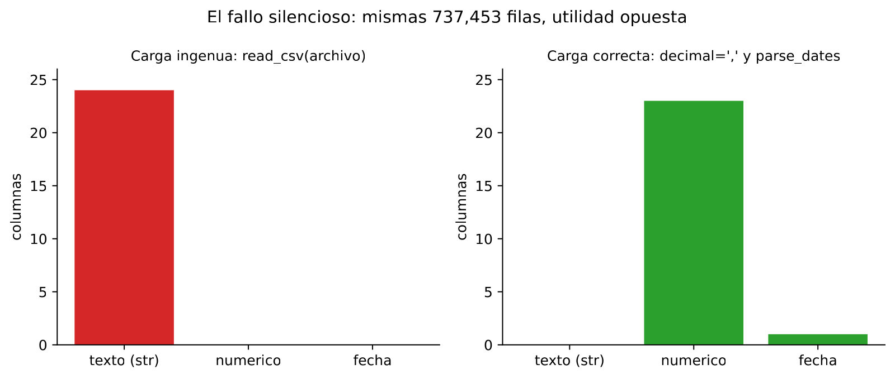
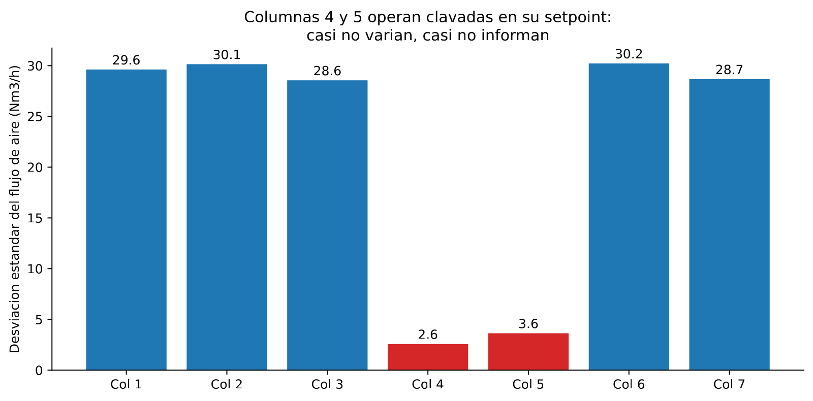
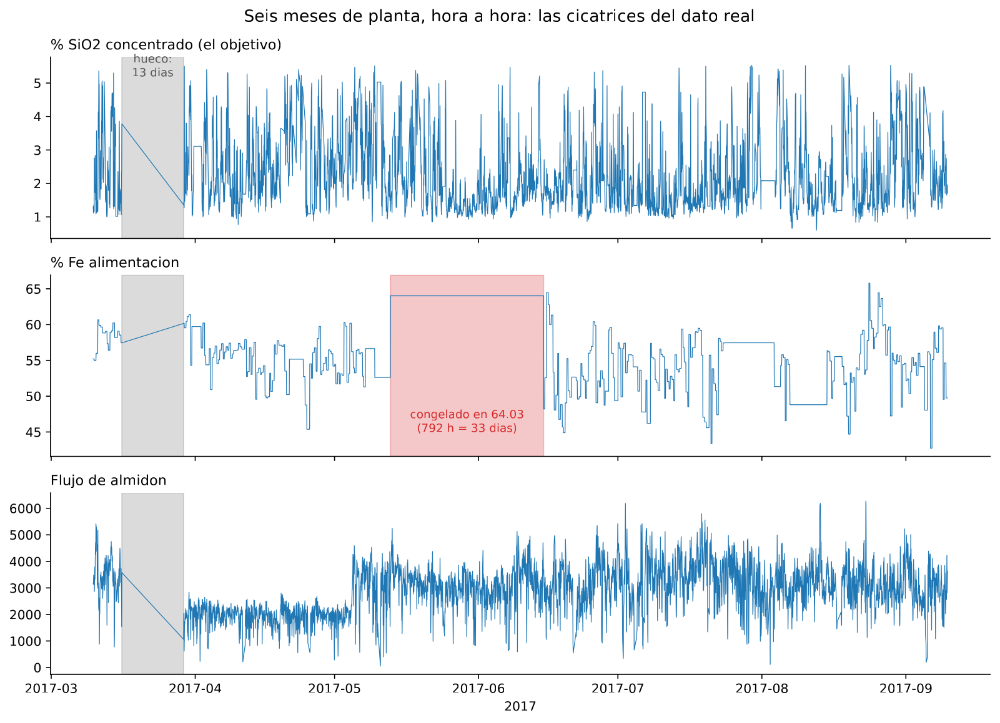
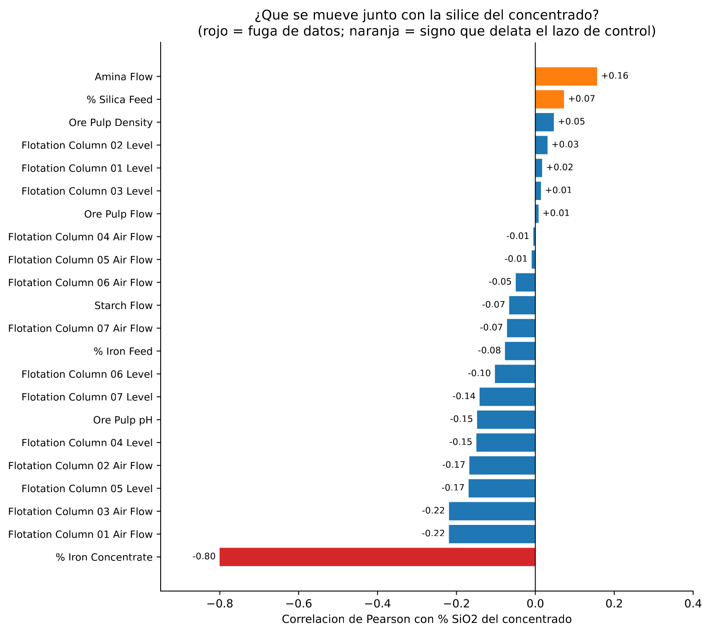
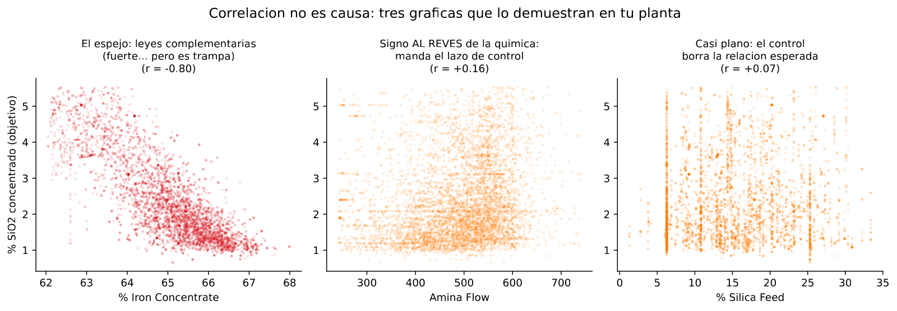
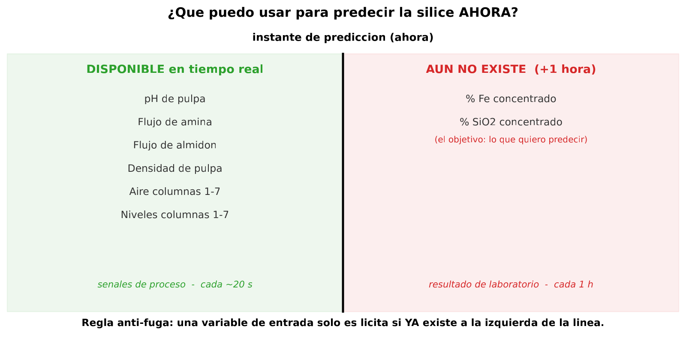
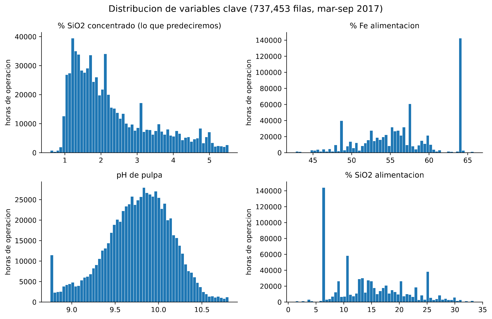

In 30 seconds
- 737,453 rows from a real plant, six months, 24 columns. Zero missing values, and that is an alarm signal, not a sign of quality.
- Three scars nobody declares: a 13-day gap, a laboratory assay frozen for 792 hours, and two air columns pinned to their setpoint.
- The strongest correlation in the file is a trap.
% Iron Concentratescores −0.80 and has to be discarded. It comes from the same analysis as the target, one hour later. - The strongest usable signal is −0.22. That is what the rest of the project has to work with.
- The rule that decides everything: a variable is only usable if it already exists at the moment of predicting.
What this module solves
Before training anything you have to know what is inside the file. And this file deceives: it looks clean and it is not.
The module takes the X-ray in six passes:
- What type each column has.
- How much each one varies.
- What happened to the process over six months.
- At what rate each thing is measured.
- What moves together with the silica.
- Which variables it would be cheating to use.
That last pass decides the whole project. If it is answered wrongly, everything that comes after will give excellent, false numbers.
Before the theory: a toy example
Two flotation columns. Five readings of air flow each, in Nm³/h, from one shift.
| Reading | Column A | Column B |
|---|---|---|
| 1 | 280 | 299 |
| 2 | 280 | 299 |
| 3 | 300 | 300 |
| 4 | 320 | 301 |
| 5 | 320 | 301 |
Step 1. The mean of each
Add up and divide by five.
Columna A: (280 + 280 + 300 + 320 + 320) / 5 = 1500 / 5 = 300
Columna B: (299 + 299 + 300 + 301 + 301) / 5 = 1500 / 5 = 300Both give exactly 300. If the report only carried the mean, they would be the same column.
Step 2. How far each reading strays from its mean
The mean is subtracted from each value.
Columna A: -20 -20 0 +20 +20
Columna B: -1 -1 0 +1 +1The difference is already visible. It still has to be summed up in one number.
Step 3. Square and average
Each deviation is squared. That way the negatives do not cancel the positives. Then divide by four, which is the five readings minus one.
Columna A: (400 + 400 + 0 + 400 + 400) / 4 = 1600 / 4 = 400
Columna B: ( 1 + 1 + 0 + 1 + 1) / 4 = 4 / 4 = 1Step 4. The square root, to get back to the original units
Columna A: raíz de 400 = 20 Nm³/h
Columna B: raíz de 1 = 1 Nm³/hThat is the standard deviation. It comes out round on purpose, so it can be checked with a pencil.
Step 5. What just happened
Same mean, twenty times more spread in one than in the other. That changes what each column can teach.
Column A moves. It can be asked what happens to the silica when it goes up, and what happens when it goes down. Column B is pinned to a setpoint value. It does not vary, so there is nothing to compare.
A column that does not vary cannot explain anything that does. That sentence is all the descriptive statistics needed to start. In the real file it holds to the letter in two specific columns.
Glossary
11 terms, in plain words
- Row. One reading of the system at one instant. Here there are 737,453.
- Column. One measured variable. Here there are 24, between laboratory assays, process variables and the date.
- Data type. What the program believes each column is: number, text or date. If it believes a number is text, every later calculation fails or lies.
- DataFrame. The table once loaded into memory. It is the object pandas works with.
- Mean. The sum divided by the number of data points.
- Median. The value that leaves half of the data below it. It withstands extremes much better than the mean.
- Standard deviation. How far a typical data point strays from the mean, in the same units as the data.
- Setpoint. The value a control loop holds a variable at. In Spanish, consigna.
- Pearson correlation. A number between minus one and one. It measures whether two variables go up and down together in a straight line. A zero rules out the straight line, not the relationship.
- Data leakage. Using as an input something that does not yet exist at the real moment of predicting. In Spanish, fuga de datos.
- Prediction instant. The exact moment at which the model has to answer. Whatever arrives afterwards is forbidden as an input.
Step by step
Step 1. Load without believing the result
The first move is not to look at the data. It is to look at the types.
The file comes from a Brazilian plant and uses a decimal comma. A naive load leaves the 24 columns as text and does not warn. There is no error and no warning. From there on, every calculation is broken.
Step 2. Measure how much each column varies
With the right types, the standard deviation of every variable can be requested. Here the toy example becomes real. Two of the seven air columns have ten times less spread than their sisters.
Step 3. Look at time, not only at the distribution
A histogram sums up six months in one shape and hides when each thing happened. The time series shows the scars: the gaps, the flat stretches and the jumps.
Step 4. Count how many distinct values there are per hour
This pass is not usually done, and here it decides a lot. The columns are not measured at the same rate. Some come from a sensor every twenty seconds. Others come from a laboratory analysis. Counting unique values per timestamp reveals it without reading documentation.
Step 5. Correlate, and distrust the result
Correlation with the target ranks the variables by suspicion, not by cause. Two warnings come up at once. A very high correlation is usually a leak. And a control loop can flip the sign that the chemistry would lead you to expect.
Step 6. Draw the line of the prediction instant
The last pass is engineering. On a timeline, lay out what information already exists when it is time to predict, and what information arrives afterwards. Whatever is left on the right is forbidden.
The code, in parts
Step 1. Load it wrong, on purpose
It is worth seeing the failure before fixing it. It is silent, and you have to know how to recognise it.
import pandas as pd
path = "data/MiningProcess_Flotation_Plant_Database.csv"
naive = pd.read_csv(path, nrows=50_000)
print(naive.dtypes.value_counts())
print(naive["% Iron Feed"].iloc[0] + naive["% Iron Feed"].iloc[1])line by line, 6 entries
import pandas as pd- Brings in the table library and gives it the nickname
pd, which is what everyone calls it. pd.read_csv(path)- Reads the comma-separated text file and returns a table.
nrows=50_000- Reads only the first 50,000 rows. The underscore inside the number is a visual separator: Python ignores it.
naive.dtypes- The type pandas has assigned to each column.
.value_counts()- Counts how many times each value appears. On the types, it says how many columns there are of each type.
.iloc[0]- The first element of the column. Python counts from zero, so
iloc[0]is the first and not the second.
str 24
Name: count, dtype: int64
55,255,2The 24 columns were left as text. The proof is in the second line. Adding the first two values of % Iron Feed should give 110.4, and it gave 55,255,2. That is one value glued behind the other, which is what the plus sign does between two texts.
Step 2. Load it right, and check the shape
df = pd.read_csv(path, decimal=",", parse_dates=["date"])
print(df.dtypes.value_counts())
print(f"{df.shape[0]:,} filas x {df.shape[1]} columnas")
print(df["date"].min(), "->", df["date"].max())
print("faltantes:", df.isna().sum().sum())line by line, 6 entries
decimal=","- Tells pandas that the comma is this file's decimal separator. Without it the numbers are not recognised.
parse_dates=["date"]- Turns that column into real dates, which can be sorted and subtracted.
df.shape- A pair with the number of rows and the number of columns.
shape[0]is rows andshape[1]columns. f"...{...:,}"- The
fbefore the quotes switches the braces on. The colon and the comma ask for a thousands separator. df.isna()- A table of the same size, with true wherever the value is missing.
.sum().sum()- The first sum counts per column. The second adds those counts and gives the total for the file.
float64 23
datetime64[us] 1
Name: count, dtype: int64
737,453 filas x 24 columnas
2017-03-10 01:00:00 -> 2017-09-09 23:00:00
faltantes: 0Now yes: 23 numeric columns, one date column, six months of plant and zero missing values. That zero is not good news. It is a clue that someone processed the file before handing it over.

Step 3. How much each air column varies
Here the toy example is checked against the real file.
aire = [f"Flotation Column 0{i} Air Flow" for i in range(1, 8)]
print(df[aire].std().round(2).to_string())line by line, 4 entries
[f"..." for i in range(1, 8)]- Builds a list by repeating the text with
itaking the values 1, 2, 3 up to 7.range(1, 8)reaches 7 and not 8. df[aire]- Selects only those seven columns of the table.
.std()- The standard deviation of each column, computed just like in the example by hand.
.round(2)- Rounds to two decimals so it can be read.
Flotation Column 01 Air Flow 29.62
Flotation Column 02 Air Flow 30.15
Flotation Column 03 Air Flow 28.56
Flotation Column 04 Air Flow 2.57
Flotation Column 05 Air Flow 3.64
Flotation Column 06 Air Flow 30.22
Flotation Column 07 Air Flow 28.67Five columns around 29, and two around 3. Those two are column B from the example: they are pinned to their setpoint.
Step 4. Duplicates and gaps
print("filas duplicadas:", df.duplicated().sum())
print("marcas de tiempo unicas:", f"{df['date'].nunique():,}")
horas = df["date"].drop_duplicates().sort_values()
huecos = horas.diff()
print(huecos[huecos > pd.Timedelta(hours=2)].to_string())line by line, 6 entries
df.duplicated()- Marks true on every row that had already appeared identical before.
.nunique()- Counts how many distinct values there are.
.drop_duplicates()- Keeps a single copy of each timestamp.
.diff()- Subtracts the previous value from each one. On dates, it gives the time between one hour and the next.
huecos[huecos > ...]- Read from the inside out. First the condition, which gives true or false per row. Then the filter, which keeps the true ones.
pd.Timedelta(hours=2)- A duration of two hours, so there is something to compare against.
filas duplicadas: 1171
marcas de tiempo unicas: 4,097
26814 13 days 07:00:001,171 repeated rows and 4,097 distinct hours. And a single large gap, of thirteen days and seven hours. Nowhere in the file is it declared.
Step 5. At what rate each column is measured
por_hora = df.groupby("date").nunique()
for col in ["% Iron Feed", "Ore Pulp pH", "% Silica Concentrate"]:
print(f"{col:<22} {por_hora[col].mean():6.2f} valores por hora")line by line, 4 entries
df.groupby("date")- Groups the rows that share the same timestamp.
.nunique()- On the group, counts how many distinct values each column has within each hour.
for col in [...]:- Repeats the block below once for each name in the list. The indentation marks which instructions are inside the loop.
{col:<22}- Pads with spaces up to 22 characters, so the columns line up.
% Iron Feed 1.00 valores por hora
Ore Pulp pH 171.31 valores por hora
% Silica Concentrate 14.54 valores por horaThree different rates in the same file. The feed brings one value per hour, repeated across the 180 rows. The process brings about 171, because the sensor measures every twenty seconds. And the target brings about 14: the laboratory analyses several times an hour, but not 180.
Step 6. What moves together with the silica
corr = df.drop(columns=["date"]).corr()["% Silica Concentrate"]
print(corr.drop("% Silica Concentrate").sort_values().head(3).round(2).to_string())
print(corr[["Amina Flow", "% Silica Feed"]].round(2).to_string())line by line, 6 entries
.drop(columns=["date"])- Removes the date, because correlating a date makes no sense.
.corr()- The matrix with the correlation of every column against every other.
["% Silica Concentrate"]- From that matrix, only the target's row.
.sort_values()- Sorts from smallest to largest, so the strong negatives come first.
.head(3)- The first three.
corr[["Amina Flow", "% Silica Feed"]]- Selects two rows by name. The double brackets are because a list is being passed.
% Iron Concentrate -0.80
Flotation Column 01 Air Flow -0.22
Flotation Column 03 Air Flow -0.22
Amina Flow 0.16
% Silica Feed 0.07The result, measured
What we expected. A plant file with many gaps and many missing values. And one or two process variables clearly tied to the silica, on which to build the model.
What came out. Neither one nor the other. Zero missing values and a single gap. And no usable variable above 0.22 in absolute value. The strongest correlation in the file turned out to be useless.
The two columns that carry no information

Columns 4 and 5 score 2.57 and 3.64, against the roughly 30 of their sisters. They are column B from the toy example. They are not discarded, because knowing a setpoint has value as context. But it goes on record that they cannot explain anything.
The three scars of the history

| Scar | Measure | What it is |
|---|---|---|
| Gap | 13 days and 7 hours, before 29 March | There are no data. None are invented |
| Frozen assay | 792 hours pinned at 64.03, from 13 May to 15 June | The laboratory stopped updating. It is not physics |
| Low starch | 3,976 rows below 100 | Another dosing regime, not an error |
The frozen stretch touches 142,560 rows, 19.3% of the file. The temptation is to throw them away, and it would be an expensive mistake. Only two columns are frozen, the feed ones. The process and the target stay alive in those same rows.
The decision: they are kept. And it goes on record that during that month those two columns are constant noise.
What moves together with the silica


| Variable | Correlation | Reading |
|---|---|---|
% Iron Concentrate | −0.80 | The strongest in the file, and a leak. It is the complement of the silica and comes from the same analysis, one hour later |
Flotation Column 01 Air Flow | −0.22 | The strongest usable signal. And it is weak |
Amina Flow | +0.16 | Sign inverted with respect to the chemistry. When the silica goes up, the operator doses more collector |
% Silica Feed | +0.07 | The feed barely explains the concentrate. The plant's control erases the relationship |
The rule that decides the project

Of the whole module, this is what to take away:
An input variable is only legitimate if it already exists at the instant when the prediction has to be made.
% Iron Concentrate breaks it, so it is excluded. Never mind that it is the most tempting correlation in the file. A model that uses it will give a splendid R² and be useless in the plant, because there that number has not arrived yet.
The distribution of the target

The target runs from 0.60 to 5.53% SiO₂. Mean 2.33, median 2.00, standard deviation 1.13.
The mean exceeds the median by 0.33. That points to a tail on the right: the plant runs well most of the time, and now and then it gets away.
That standard deviation of 1.13 is the project's measuring stick. Always predicting the mean already gives that error. Any model that does not get below it is adding nothing.
Watch out
- The comma failure does not warn. There is no error and no warning. The program goes on, the charts come out and the results are wrong. The defence is to look at the types before computing.
- Zero missing values is not a good sign. In plant data something is always missing. A clean zero means someone already cleaned, and with what criterion is unknown.
- The highest correlation is usually the trap. If a variable explains the target suspiciously well, the first question is where it comes from and when it arrives.
- A control loop flips the signs. The amine goes up when the silica goes up, not the other way round. Reading that +0.16 as chemistry is reading it backwards.
- A column without variation is not bad, it is mute. It is not discarded as a rule, but it cannot be asked to explain anything.
- Not every row in an hour says the same thing. The target is not repeated 180 times per hour: there are about 14 distinct values. Checking it costs one line.
Metallurgical bridge
This is sampling, and the rules of sampling are already known.
A pulp aliquot taken from a sump without homogenising gives a grade that does not represent the flow. The laboratory reports it with the same confidence as if it were good. The load with a decimal comma is the same thing: the instrument answers, but it answers about something else.
Columns 4 and 5 are a closed, well-tuned control loop. Asking that column what it does to the silica is like asking a level controller. The answer is that it does nothing, because it does not move. What moves the process is the setpoint, and the setpoint is not recorded.
And % Iron Concentrate is the online analyser against the laboratory assay. An X-ray analyser gives the grade at once and serves for control. The laboratory assay arrives one hour later and serves for reconciliation. Using it as the input of a real-time prediction is asking the morning shift to decide with the afternoon's report.
Review
The file has zero missing values. Is that good news?
No, it is an alarm signal. In real plant data there are always sensor gaps, stoppages and assays that were not done.
A file with zero missing values means someone processed it before handing it over, and it does not come documented with what criterion. This file confirms it from another side: it has 1,171 exact duplicate rows and a thirteen-day gap. That gap does not show up as missing, because the rows simply do not exist. The missing value became an absence, and an absence is harder to see.
The strongest correlation with the silica is −0.80. Why is it not used?
Because it is % Iron Concentrate. In reverse iron flotation the concentrate is practically iron and silica, so if one goes up the other goes down. That correlation is not an exploitable process relationship, it is almost an arithmetic identity.
And there is a stronger reason. It comes from the same laboratory analysis as the target and arrives one hour late. At the instant of predicting it does not exist. Using it is data leakage: the model would come out splendid on the computer and useless in the plant.
How do you know two air columns are pinned to their setpoint, without documentation?
From the standard deviation. Columns 1, 2, 3, 6 and 7 have around 29 Nm³/h of spread. Columns 4 and 5 have 2.57 and 3.64.
Ten times less spread with the same mean says that a control loop is holding them. The practical consequence is the one from the toy example. A variable that does not vary cannot explain one that does. Those two columns will have near-zero importance in any model, and it is worth knowing before training it.
The iron assay is frozen for 792 hours and that touches 19% of the file. Are those rows thrown away?
No. They are kept and the limitation goes on record.
What is frozen is two feed columns, % Iron Feed and % Silica Feed, because the laboratory stopped updating the value. The process variables and the target keep being measured normally in those same 142,560 rows.
Throwing them away would mean losing a fifth of the good data to fix two columns that contribute less than 0.08 in absolute value. During that month, those two columns are constant noise.
Explain the anti-leak rule the way you would tell it to a plant manager.
A piece of data can only be used to predict if it is already on the table at the moment of deciding.
Draw a vertical line at the instant of the prediction. On the left is what the system already has: pH, flows, levels and air, measured every twenty seconds. On the right is what will arrive afterwards, which is the laboratory analysis, including the iron in the concentrate.
Everything on the right is forbidden as an input, however well it correlates. If it sneaks in, the model passes the exam by copying the answer. In the plant nobody hands it the answer, and it fails.